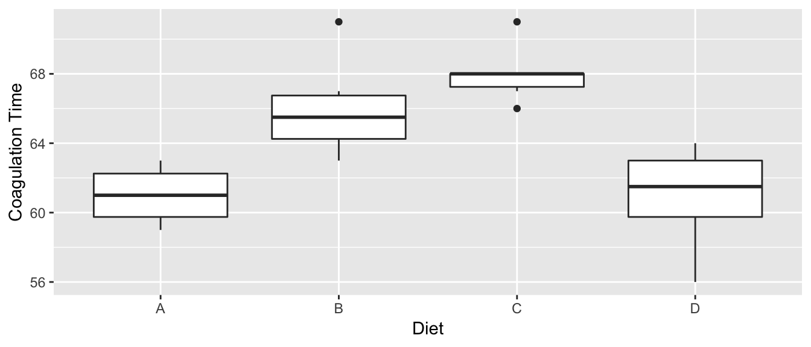
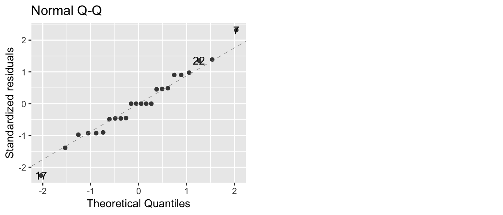
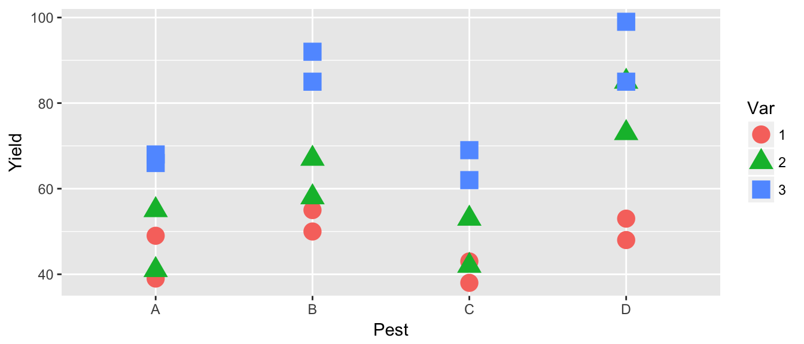
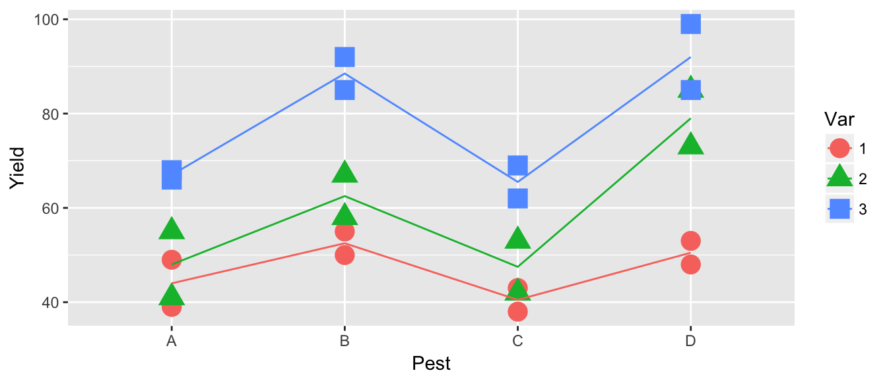
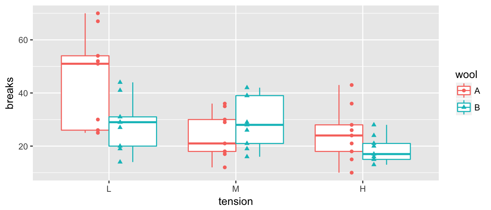
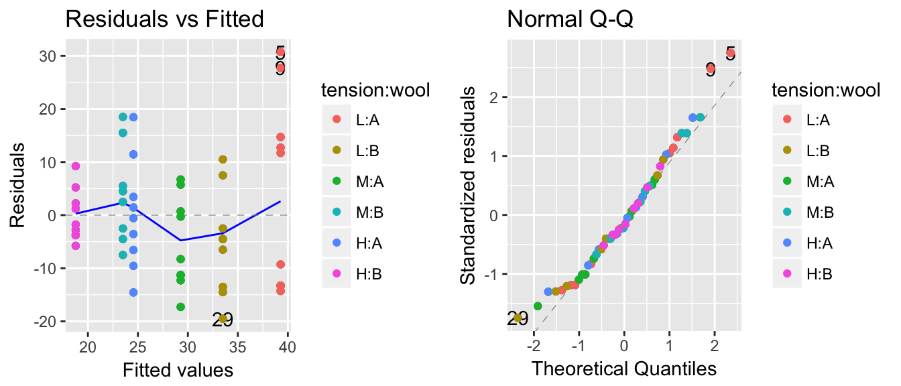
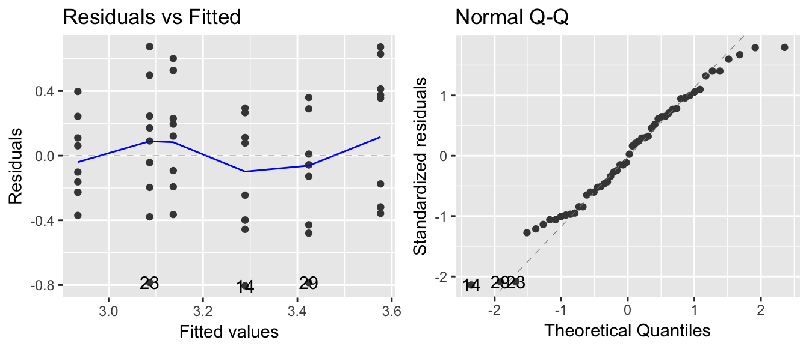
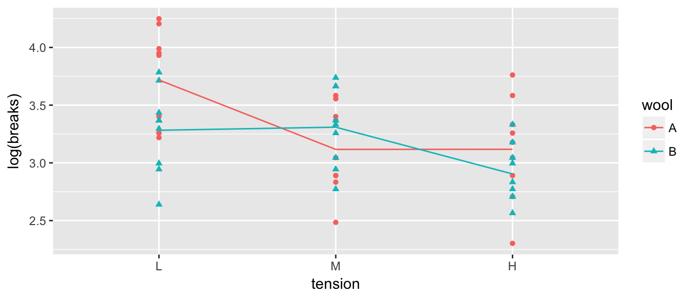

Chapter 9 Two-way ANOVA
# Load my usual packages
library(faraway)
library(ggplot2)
library(dplyr)
library(ggfortify)
library(multcompView)Given a response that is predicted by two different categorical variables. Suppose we denote the levels of the first factor as \(\alpha_{i}\) and has \(I\) levels. The second factor has levels \(\beta_{j}\) and has \(J\) levels. As usual we let \(\epsilon_{ijk}\stackrel{iid}{\sim}N\left(0,\sigma^{2}\right)\), and we wish to fit the model
\[y_{ijk}=\mu+\alpha_{i}+\beta_{j}+\epsilon_{ijk}\]
which has the main effects of each covariate or possibly the model with the interaction \[y_{ijk}=\mu+\alpha_{i}+\beta_{j}+\left(\alpha\beta\right)_{ij}+\epsilon_{ijk}\]
To consider what an interaction term might mean consider the role of temperature and humidity on the amount of fungal growth. You might expect to see data similar to this (where the numbers represent some sort of measure of fungal growth):
| 5% | 30% | 60% | 90% | ||
|---|---|---|---|---|---|
2C |
2 |
4 |
8 |
16 |
|
Temperature |
10C |
3 |
9 |
27 |
81 |
30C |
4 |
16 |
64 |
256 |
In this case we see that increased humidity increases the amount of fungal growth, but the amount of increase depends on the temperature. At 2 C, the increase is humidity increases are significant, but at 10 C the increases are larger, and at 30 C the increases are larger yet. The effect of changing from one humidity level to the next depends on which temperature level we are at. This change in effect of humidity is an interaction effect. A memorable example is that chocolate by itself is good. Strawberries by themselves are also good. But the combination of chocolate and strawberries is a delight greater than the sum of the individual treats.
We can look at a graph of the Humidity and Temperature vs the Response and see the effect of increasing humidity changes based on the temperature level. Just as in the ANCOVA model, the interaction manifested itself in non-parallel slopes, the interaction manifests itself in non-parallel slopes when I connect the dots across the factor levels.

Unfortunately the presence of a significant interaction term in the model makes interpretation difficult, but examining the interaction plots can be quite helpful in understanding the effects. Notice in this example, we 3 levels of temperature and 4 levels of humidity for a total of 12 different possible treatment combinations. In general I will refer to these combinations as cells.
9.1 Orthogonality
When designing an experiment, I want to make sure than none of my covariates are confounded with each other and I’d also like for them to not be correlated. Consider the following three experimental designs, where the number in each bin is the number of subjects of that type. I am interested in testing 2 different drugs and studying its effect on heart disease within the gender groups.
Design 1 |
Males |
Females |
Design 2 |
Males |
Females |
|
Treatment A |
0 |
10 |
Treatment A |
1 |
9 |
|
Treatment B |
6 |
0 |
Treatment B |
5 |
1 |
Design 3 |
Males |
Females |
Design 4 |
Males |
Females |
|
Treatment A |
3 |
5 |
Treatment A |
4 |
4 |
|
Treatment B |
3 |
5 |
Treatment B |
4 |
4 |
This design is very bad. Because we have no males taking drug 1, and no females taking drug 2, we can’t say if any observed differences are due to the effect of drug 1 versus 2, or gender. When this situation happens, we say that the gender effect is confounded with the drug effect.
This design is not much better. Because we only have one observation in the Male-Drug 1 group, any inference we make about the effect of drug 1 on males is based on one observation. In general that is a bad idea.
Design 3 is better than the previous 2 because it evenly distributes the males and females among the two drug categories. However, it seems wasteful to have more females than males because estimating average of the male groups, I only have 6 observations while I have 10 females.
This is the ideal design, with equal numbers of observations in each gender-drug group.
Designs 3 and 4 are good because the correlation among my predictors is 0. In design 1, the drug covariate is perfectly correlated to the gender covariate. The correlation is less in design 2, but is zero in designs 3 and 4.We could show this by calculating the design matrix for each design and calculating the correlation coefficients between each of pairs of columns.
Having an orthogonal design with equal numbers of observations in each group has many nice ramifications. Most importantly, with an orthogonal design, the interpretation of parameter is not dependent on what other factors are in the model. Balanced designs are also usually optimal in the sense that the variances of \(\hat{\boldsymbol{\beta}}\) are as small as possible given the number of observations we have (barring any other a priori information).
9.2 Main Effects Model
In the one factor ANOVA case, the additional degrees of freedom used by adding a factor with \(I\) levels was \(I-1\). In the case that we consider two factors with the first factor having \(I\) levels and the second factor having \(J\) levels, then model \[y_{ijk}=\mu+\alpha_{i}+\beta_{j}+\epsilon_{ijk}\] adds \((I-1)+(J-1)\) parameters to the model because both \(\alpha_{1}=\beta_{1}=0\).
The intercept term, \(\mu\) is the reference point for all the other parameters. This is the expected value for an observation in the first level of factor 1 and the first level of factor two.
\(\alpha_{i}\) is the amount you expect the response to increase when changing from factor 1 level 1, to factor 1 level i (while the second factor is held constant).
\(\beta_{j}\) is the amount you expect the response to increase when changing from factor 2 level 1 to factor 2 level j (while the first factor is held constant).
Referring back to the fungus example, let the \(\alpha_{i}\) values be associated with changes in humidity and \(\beta_{j}\) values be associated with changes in temperature levels. Then the expected value of each treatment combination is
| 5% | 30% | 60% | 90% | |
|---|---|---|---|---|
2C |
\(\mu+0+0\) |
\(\mu+\alpha_2+0\) |
\(\mu+\alpha_3+0\) |
\(\mu+\alpha_4+0\) |
10C |
\(\mu+0+\beta_2\) |
\(\mu+\alpha_2+\beta_2\) |
\(\mu+\alpha_3+\beta_2\) |
\(\mu+\alpha_4+\beta_2\) |
30C |
\(\mu+0+\beta_3\) |
\(\mu+\alpha_2+\beta_3\) |
\(\mu+\alpha_3+\beta_3\) |
\(\mu+\alpha_4+\beta_3\) |
9.2.1 Example - Fruit Trees
An experiment was conducted to determine the effects of four different pesticides on the yield of fruit from three different varieties of a citrus tree. Eight trees of each variety were randomly selected from an orchard. The four pesticides were randomly assigned to two trees of each variety and applications were made according to recommended levels. Yields of fruit (in bushels) were obtained after the test period.
Critically notice that we have equal number of observations for each treatment combination.
# Typing the data in by hand because I got this example from a really old text book...
Pesticide <- factor(c('A','B','C','D'))
Variety <- factor(c('1','2','3'))
fruit <- data.frame( expand.grid(rep=1:2, Pest=Pesticide, Var=Variety) )
fruit$Yield <- c(49,39,50,55,43,38,53,48,55,41,67,58,53,42,85,73,66,68,85,92,69,62,85,99)The first thing to do (as always) is to look at our data
ggplot(fruit, aes(x=Pest, color=Var, y=Yield, shape=Var)) +
geom_point(size=5) 
The first thing we notice is that pesticides B and D seem to be better than the others and that variety 3 seems to be the best producer. The effect of pesticide treatment seems consistent between varieties, so we don’t expect that the interaction effect will be significant. We next fit a linear model and look at the diagnostic plots.
m3 <- lm(Yield ~ Var + Pest, data=fruit)
autoplot(m3, which=1:2)
There might be a little curvature in the fitted vs residuals, but because we can’t fit a polynomial to a categorical variable, and the QQ-plot looks good, we’ll ignore it for now and eventually consider an interaction term. Just for fun, we can examine the smaller models with just Variety or Pesticide.
m1 <- lm(Yield ~ Var, data=fruit)
m2 <- lm(Yield ~ Pest, data=fruit)
m3 <- lm(Yield ~ Var + Pest, data=fruit)
summary(m1)$coef %>% round(digits=3)## Estimate Std. Error t value Pr(>|t|)
## (Intercept) 46.875 4.359 10.754 0.000
## Var2 12.375 6.164 2.008 0.058
## Var3 31.375 6.164 5.090 0.000summary(m2)$coef %>% round(digits=3)## Estimate Std. Error t value Pr(>|t|)
## (Intercept) 53.000 6.429 8.243 0.000
## PestB 14.833 9.093 1.631 0.118
## PestC -1.833 9.093 -0.202 0.842
## PestD 20.833 9.093 2.291 0.033summary(m3)$coef %>% round(digits=3)## Estimate Std. Error t value Pr(>|t|)
## (Intercept) 38.417 3.660 10.497 0.000
## Var2 12.375 3.660 3.381 0.003
## Var3 31.375 3.660 8.573 0.000
## PestB 14.833 4.226 3.510 0.003
## PestC -1.833 4.226 -0.434 0.670
## PestD 20.833 4.226 4.930 0.000Notice that the affects for Variety and Pesticide are the same whether or not the other is in the model. This is due to the orthogonal design of the experiment and makes it much easier to interpret the main effects of Variety and Pesticide.
9.2.2 ANOVA Table
Most statistical software will produce an analysis of variance table when fitting a two-way ANOVA. This table is very similar to the analysis of variance table we have seen in the one-way ANOVA, but has several rows which correspond to the additional factors added to the model.
Consider the two-way ANOVA with factors \(A\) and \(B\) which have levels \(I\) and \(J\) discrete levels respectively. For convenience let \(RSS_{1}\) is the residual sum of squares of the intercept-only model, and \(RSS_{A}\) be the residual sum of squares for the model with just the main effect of factor \(A\), and \(RSS_{A+B}\) be the residual sum of squares of the model with both main effects. Finally assume that we have a total of \(n\) observations. The ANOVA table for this model is as follows:
| Source | df | Sum of Sq (SS) | Mean Sq | F | p-value |
|---|---|---|---|---|---|
A |
\(df_A=I-1\) |
\(SS_A = RSS_1 - RSS_A\) |
\(MS_A = SS_A / df_A\) |
\(MS_A / MSE\) |
\(P\left( F_{df_A, df_e} > F_A \right)\) |
B |
\(df_B=J-1\) |
\(SS_B = RSS_A - RSS_{A+B}\) |
\(MS_B = SS_B / df_B\) |
\(MS_B / MSE\) |
\(P\left( F_{df_B, df_e} > F_B \right)\) |
Error |
\(df_e=n-I-J+1\) |
\(RSS_{A+B}\) |
\(MSE = RSS_{A+B} / df_e\) |
Note, if the table is cut off, you can change decrease your font size and have it all show up…
This arrangement of the ANOVA table is referred to as “Type I” sum of squares.
We can examine this table in the fruit trees example using the anova() command but just passing a single model.
m4 <- lm(Yield ~ Var + Pest, data=fruit)
anova( m4 )## Analysis of Variance Table
##
## Response: Yield
## Df Sum Sq Mean Sq F value Pr(>F)
## Var 2 3996.1 1998.04 37.292 3.969e-07 ***
## Pest 3 2227.5 742.49 13.858 6.310e-05 ***
## Residuals 18 964.4 53.58
## ---
## Signif. codes: 0 '***' 0.001 '**' 0.01 '*' 0.05 '.' 0.1 ' ' 1We might think that this is the same as fitting three nested models and running an F-test on each successive pairs of models, but it isn’t. While both will give the same Sums of Squares, the F statistics are different because the MSE of the complex model is different. In particular, the F-statistics are larger and thus the p-values are smaller for detecting significant effects.
m1 <- lm(Yield ~ 1, data=fruit)
m2 <- lm(Yield ~ Var, data=fruit)
m3 <- lm(Yield ~ Var + Pest, data=fruit)
anova( m1, m2 )## Analysis of Variance Table
##
## Model 1: Yield ~ 1
## Model 2: Yield ~ Var
## Res.Df RSS Df Sum of Sq F Pr(>F)
## 1 23 7188.0
## 2 21 3191.9 2 3996.1 13.146 0.0001987 ***
## ---
## Signif. codes: 0 '***' 0.001 '**' 0.01 '*' 0.05 '.' 0.1 ' ' 1anova( m2, m3 )## Analysis of Variance Table
##
## Model 1: Yield ~ Var
## Model 2: Yield ~ Var + Pest
## Res.Df RSS Df Sum of Sq F Pr(>F)
## 1 21 3191.9
## 2 18 964.4 3 2227.5 13.858 6.31e-05 ***
## ---
## Signif. codes: 0 '***' 0.001 '**' 0.01 '*' 0.05 '.' 0.1 ' ' 19.2.3 Estimating Contrasts
As in the one-way ANOVA, we are interested in which factor levels differ. For example, we might suspect that it makes sense to group pesticides B and D together and claim that they are better than the group of A and C.
Just as we did in the one-way ANOVA model, this is such a common thing to do that there is an easy way to do this, using lsmeans.
m3 <- lm(Yield ~ Var + Pest, data=fruit)
lsmeans(m3, spec=pairwise~Var)## $lsmeans
## Var lsmean SE df lower.CL upper.CL
## 1 46.875 2.587922 18 41.43798 52.31202
## 2 59.250 2.587922 18 53.81298 64.68702
## 3 78.250 2.587922 18 72.81298 83.68702
##
## Results are averaged over the levels of: Pest
## Confidence level used: 0.95
##
## $contrasts
## contrast estimate SE df t.ratio p.value
## 1 - 2 -12.375 3.659874 18 -3.381 0.0089
## 1 - 3 -31.375 3.659874 18 -8.573 <.0001
## 2 - 3 -19.000 3.659874 18 -5.191 0.0002
##
## Results are averaged over the levels of: Pest
## P value adjustment: tukey method for comparing a family of 3 estimateslsmeans(m3, spec=pairwise~Pest)## $lsmeans
## Pest lsmean SE df lower.CL upper.CL
## A 53.00000 2.988274 18 46.72187 59.27813
## B 67.83333 2.988274 18 61.55520 74.11146
## C 51.16667 2.988274 18 44.88854 57.44480
## D 73.83333 2.988274 18 67.55520 80.11146
##
## Results are averaged over the levels of: Var
## Confidence level used: 0.95
##
## $contrasts
## contrast estimate SE df t.ratio p.value
## A - B -14.833333 4.226058 18 -3.510 0.0122
## A - C 1.833333 4.226058 18 0.434 0.9719
## A - D -20.833333 4.226058 18 -4.930 0.0006
## B - C 16.666667 4.226058 18 3.944 0.0048
## B - D -6.000000 4.226058 18 -1.420 0.5038
## C - D -22.666667 4.226058 18 -5.364 0.0002
##
## Results are averaged over the levels of: Var
## P value adjustment: tukey method for comparing a family of 4 estimatesThese outputs are nice and they show the main effects of variety and pesticide. Similar to the 1-way ANOVA, we also want to be able to calculate the compact letter display.
m3 <- lm(Yield ~ Var + Pest, data=fruit)
lsmeans(m3, spec=pairwise~Var) %>% cld(Letters=letters)## Var lsmean SE df lower.CL upper.CL .group
## 1 46.875 2.587922 18 41.43798 52.31202 a
## 2 59.250 2.587922 18 53.81298 64.68702 b
## 3 78.250 2.587922 18 72.81298 83.68702 c
##
## Results are averaged over the levels of: Pest
## Confidence level used: 0.95
## P value adjustment: tukey method for comparing a family of 3 estimates
## significance level used: alpha = 0.05lsmeans(m3, spec=pairwise~Pest) %>% cld(Letters=letters)## Pest lsmean SE df lower.CL upper.CL .group
## C 51.16667 2.988274 18 44.88854 57.44480 a
## A 53.00000 2.988274 18 46.72187 59.27813 a
## B 67.83333 2.988274 18 61.55520 74.11146 b
## D 73.83333 2.988274 18 67.55520 80.11146 b
##
## Results are averaged over the levels of: Var
## Confidence level used: 0.95
## P value adjustment: tukey method for comparing a family of 4 estimates
## significance level used: alpha = 0.05So we see that each variety is significantly different from all the others and among the pesticides, \(A\) and \(C\) are indistigishable as are \(B\) and \(D\), but there is a difference between the \(A,C\) and \(B,D\) groups.
9.3 Interaction Model
When the model contains the interaction of the two factors, our model is written as \[y_{ijk}=\mu+\alpha_{i}+\beta_{j}+\left(\alpha\beta\right)_{ij}+\epsilon_{ijk}\]
Interpreting effects effects can be very tricky. Under the interaction, the effect of changing from factor 1 level 1 to factor 1 level \(i\) depends on what level of factor 2 is. In essence, we are fitting a model that allows each of the \(I\times J\) cells in my model to vary independently. As such, the model has a total of \(I\times J\) parameters but because the model without interactions had \(1+(I-1)+(J-1)\) terms in it, the interaction is adding \(df_{AB}\) parameters. We can solve for this via: \[\begin{aligned} I\times J &= 1+(I-1)+(J-1)+df_{AB} \\ I\times J &= I+J-1+df_{AB} \\ IJ-I-J &= -1+df_{AB} \\ I(J-1)-J &= -1+df_{AB} \\ I(J-1)-J+1 &= df_{AB} \\ I(J-1)-(J-1) &= df_{AB} \\ (I-1)(J-1) &= df_{AB} \end{aligned}\]
This makes sense because the first factor added \((I-1)\) columns to the design matrix and an interaction with a continuous covariate just multiplied the columns of the factor by the single column of the continuous covariate. Creating an interaction of two factors multiplies each column of the first factor by all the columns defined by the second factor.
The expected value of the \(ij\) combination is \(\mu+\alpha_{i}+\beta_{j}+\left(\alpha\beta\right)_{ij}\). Returning to our fungus example, the expected means for each treatment under the model with main effects and the interaction is
| 5% | 30% | 60% | 90% | |
|---|---|---|---|---|
2C |
\(\mu+0+0+0\) |
\(\mu+\alpha_2+0+0\) |
\(\mu+\alpha_3+0+0\) |
\(\mu+\alpha_4+0+0\) |
10C |
\(\mu+0+\beta_2+0\) |
\(\mu+\alpha_2+\beta_2+\left(\alpha\beta\right)_{22}\) |
\(\mu+\alpha_3+\beta_2+\left(\alpha\beta\right)_{32}\) |
\(\mu+\alpha_4+\beta_2+\left(\alpha\beta\right)_{42}\) |
30C |
\(\mu+0+\beta_3+0\) |
\(\mu+\alpha_2+\beta_3+\left(\alpha\beta\right)_{23}\) |
\(\mu+\alpha_3+\beta_2+\left(\alpha\beta\right)_{33}\) |
\(\mu+\alpha_4+\beta_2+\left(\alpha\beta\right)_{43}\) |
Notice that we have added \(6=3\cdot2=\left(4-1\right)\left(3-1\right)=\left(I-1\right)\left(J-1\right)\) interaction parameters \(\left(\alpha\beta\right)_{ij}\) to the main effects only model. The interaction model has \(p=12\) parameters, one for each cell in my treatment array.
In general it is hard to interpret the meaning of \(\alpha_{i}\), \(\beta_{j}\), and \(\left(\alpha\beta\right)_{ij}\) and the best way to make sense of them is to look at the interaction plots.
9.3.1 ANOVA Table
Most statistical software will produce an analysis of variance table when fitting a two-way ANOVA. This table is very similar to the analysis of variance table we have seen in the one-way ANOVA, but has several rows which correspond to the additional factors added to the model.
Consider the two-way ANOVA with factors \(A\) and \(B\) which have levels \(I\) and \(J\) discrete levels respectively. For convenience let \(RSS_{1}\) be the residual sum of squares of the intercept-only model, and \(RSS_{A}\) be the residual sum of squares for the model with just the main effect of factor \(A\). Likewise \(RSS_{A+B}\) and \(RSS_{A*B}\) shall be the residual sum of squares of the model with just the main effects and the model with main effects and the interaction. Finally assume that we have a total of \(n\) observations. The ANOVA table for this model is as follows:
| df | Sum Sq (SS) | MS | F | \(Pr(\ge F)\) | |
|---|---|---|---|---|---|
A |
\(df_A=I-1\) |
\(SS_A = RSS_1 - RSS_A\) |
\(MS_A = SS_A/df_A\) |
\(MS_A / MSE\) |
\(Pr(F_{df_A,df_{\epsilon}} \ge F_A\) |
B |
\(df_B=J-1\) |
\(SS_B = RSS_A - RSS_{A+B}\) |
\(MS_B = SS_B/df_B\) |
\(MS_B / MSE\) |
\(Pr(F_{df_B,df_{\epsilon}} \ge F_B\) |
AB |
\(df_{AB}=(I-1)(J-1)\) |
\(SS_{A*B} = RSS_{A+B}-RSS_{A*B}\) |
\(MS_{AB} = SS_{AB} / df_{AB}\) |
\(MS_{AB}/ MSE\) |
\(Pr(F_{df_{AB},df_{\epsilon}} \ge F_{AB}\) |
Error |
\(df_{\epsilon}=n-IJ\) |
\(RSS_{A*B}\) |
\(MSE = RSS_{A*B} / df_{\epsilon}\) |
This arrangement of the ANOVA table is referred to as “Type I” sum of squares. Type III sums of squares are the difference between the full interaction model and the model removing each parameter group, even when it doesn’t make sense. For example in the Type III table, \(SS_{A}=RSS_{B+A:B}-RSS_{A*B}\). There is an intermediate form of the sums of squares called Type II, that when removing a main effect also removes the higher order interaction. In the case of balanced (orthogonal) designs, there is no difference between the different types, but for non-balanced designs, the numbers will change. To access these other types of sums of squares, use the Anova() function in the package car.
9.3.2 Example - Fruit Trees (continued)
We next consider whether or not to include the interaction term to the fruit tree model. We fit the model with the interaction and then graph the results.
m4 <- lm(Yield ~ Var * Pest, data=fruit)
fruit$y.hat <- predict(m4)
ggplot(fruit, aes(x=Pest, color=Var, shape=Var, y=Yield)) +
geom_point(size=5) +
geom_line(aes(y=y.hat, x=as.integer(Pest)))
All of the line segments are close to parallel so, we don’t expect the interaction to be significant.
anova( m4 )## Analysis of Variance Table
##
## Response: Yield
## Df Sum Sq Mean Sq F value Pr(>F)
## Var 2 3996.1 1998.04 47.2443 2.048e-06 ***
## Pest 3 2227.5 742.49 17.5563 0.0001098 ***
## Var:Pest 6 456.9 76.15 1.8007 0.1816844
## Residuals 12 507.5 42.29
## ---
## Signif. codes: 0 '***' 0.001 '**' 0.01 '*' 0.05 '.' 0.1 ' ' 1Examining the ANOVA table, we see that the interaction effect is not significant and we will stay with simpler model Yield~Var+Pest.
9.3.3 Example - Warpbreaks
This data set looks at the number of breaks that occur in two different types of wool under three different levels of tension (low, medium, and high). The fewer number of breaks, the better.
As always, the first thing we do is look at the data. In this case, it looks like the number of breaks decreases with increasing tension and perhaps wool B has fewer breaks than wool A.
library(ggplot2)
library(faraway)
data(warpbreaks)
ggplot(warpbreaks, aes(x=tension, y=breaks, color=wool, shape=wool), size=2) +
geom_boxplot() +
geom_point(position=position_dodge(width=.35)) # offset the wool groups We next fit our linear model and examine the diagnostic plots.
model <- lm(breaks ~ tension + wool, data=warpbreaks)
autoplot(model, which=c(1,2)) + geom_point( aes(color=tension:wool))
The residuals vs fitted values plot is a little worrisome and appears to be an issue with non-constant variance, but the normality assumption looks good. We’ll check for a Box-Cox transformation next.
MASS::boxcox(model)
This suggests we should make a log transformation, though because the confidence interval is quite wide we might consider if the increased difficulty in interpretation makes sufficient progress towards making the data meet the model assumptions.. The diagnostic plots of the resulting model look better for the constant variance assumption, but the normality is now a worse off. Because the Central Limit Theorem helps deal with the normality question, I’d rather stabilize the variance at the cost of the normality.
model.1 <- lm(log(breaks) ~ tension + wool, data=warpbreaks)
autoplot(model.1, which=c(1,2))
Next we’ll fit the interaction model and check the diagnostic plots. The diagnostic plots look good and this appears to be a legitimate model.
model.2 <- lm(log(breaks) ~ tension * wool, data=warpbreaks)
autoplot(model.2, which=c(1,2))
Then we’ll do an F-test to see if it is a better model than the main effects model. The p-value is marginally significant, so we’ll keep the interaction in the model, but recognize that it is a weak interaction.
anova(model.1, model.2) # explicitly look model1 vs model2## Analysis of Variance Table
##
## Model 1: log(breaks) ~ tension + wool
## Model 2: log(breaks) ~ tension * wool
## Res.Df RSS Df Sum of Sq F Pr(>F)
## 1 50 7.6270
## 2 48 6.7138 2 0.91315 3.2642 0.04686 *
## ---
## Signif. codes: 0 '***' 0.001 '**' 0.01 '*' 0.05 '.' 0.1 ' ' 1anova(model.2) # table of sequentially added terms in model 2## Analysis of Variance Table
##
## Response: log(breaks)
## Df Sum Sq Mean Sq F value Pr(>F)
## tension 2 2.1762 1.08808 7.7792 0.001185 **
## wool 1 0.3125 0.31253 2.2344 0.141511
## tension:wool 2 0.9131 0.45657 3.2642 0.046863 *
## Residuals 48 6.7138 0.13987
## ---
## Signif. codes: 0 '***' 0.001 '**' 0.01 '*' 0.05 '.' 0.1 ' ' 1Next we look at the effect of the interaction and the easiest way to do this is to look at the interaction plot. This plot shows the raw data and connects lines to the cell mean of each factor combination.
warpbreaks$logy.hat <- predict(model.2)
ggplot(warpbreaks, aes(x=tension, y=log(breaks), color=wool, shape=wool)) +
geom_point() +
geom_line(aes(y=logy.hat, x=as.integer(tension)))
We can see that it appears that wool A has a decrease in breaks between low and medium tension, while wool B has a decrease in breaks between medium and high. It is actually quite difficult to see this interaction when we examine the model coefficients.
summary(model.2)##
## Call:
## lm(formula = log(breaks) ~ tension * wool, data = warpbreaks)
##
## Residuals:
## Min 1Q Median 3Q Max
## -0.81504 -0.27885 0.04042 0.27319 0.64358
##
## Coefficients:
## Estimate Std. Error t value Pr(>|t|)
## (Intercept) 3.7179 0.1247 29.824 < 2e-16 ***
## tensionM -0.6012 0.1763 -3.410 0.00133 **
## tensionH -0.6003 0.1763 -3.405 0.00134 **
## woolB -0.4356 0.1763 -2.471 0.01709 *
## tensionM:woolB 0.6281 0.2493 2.519 0.01514 *
## tensionH:woolB 0.2221 0.2493 0.891 0.37749
## ---
## Signif. codes: 0 '***' 0.001 '**' 0.01 '*' 0.05 '.' 0.1 ' ' 1
##
## Residual standard error: 0.374 on 48 degrees of freedom
## Multiple R-squared: 0.3363, Adjusted R-squared: 0.2672
## F-statistic: 4.864 on 5 and 48 DF, p-value: 0.001116To test if there is a statistically significant difference between medium and high tensions for wool type B, we really need to test the following hypothesis: \[\begin{aligned} H_{0}:\;\left(\mu+\alpha_{2}+\beta_{2}+\left(\alpha\beta\right)_{22}\right)-\left(\mu+\alpha_{3}+\beta_{2}+\left(\alpha\beta\right)_{32}\right) & = 0 \\ H_{a}:\;\left(\mu+\alpha_{2}+\beta_{2}+\left(\alpha\beta\right)_{22}\right)-\left(\mu+\alpha_{3}+\beta_{2}+\left(\alpha\beta\right)_{32}\right) &\ne 0 \end{aligned}\]
This test reduces to testing if \(\alpha_{2}-\alpha_{3}+\left(\alpha\beta\right)_{22}-\left(\alpha\beta\right)_{23}=0\). Calculating this difference from the estimated values of the summery table we have \(-.6012+.6003+.6281-.2221=0.4051\), we don’t know if that is significantly different than zero.
In the main effects model, we were able to read off the necessary test using lsmeans. Fortunately, we can do the same thing here. In this case, we’ll look at the interactions piece of the lsmeans command. In this case, we find the test H:B - M:B in the last row of the interactions.
lsmeans(model.2, specs= pairwise~tension )## NOTE: Results may be misleading due to involvement in interactions## $lsmeans
## tension lsmean SE df lower.CL upper.CL
## L 3.500162 0.08815128 48 3.322922 3.677402
## M 3.213038 0.08815128 48 3.035798 3.390278
## H 3.010887 0.08815128 48 2.833647 3.188127
##
## Results are averaged over the levels of: wool
## Results are given on the log (not the response) scale.
## Confidence level used: 0.95
##
## $contrasts
## contrast estimate SE df t.ratio p.value
## L - M 0.2871237 0.1246647 48 2.303 0.0649
## L - H 0.4892747 0.1246647 48 3.925 0.0008
## M - H 0.2021510 0.1246647 48 1.622 0.2465
##
## Results are averaged over the levels of: wool
## Results are given on the log (not the response) scale.
## P value adjustment: tukey method for comparing a family of 3 estimateslsmeans(model.2, specs= pairwise~wool )## NOTE: Results may be misleading due to involvement in interactions## $lsmeans
## wool lsmean SE df lower.CL upper.CL
## A 3.317439 0.07197522 48 3.172723 3.462155
## B 3.165286 0.07197522 48 3.020570 3.310001
##
## Results are averaged over the levels of: tension
## Results are given on the log (not the response) scale.
## Confidence level used: 0.95
##
## $contrasts
## contrast estimate SE df t.ratio p.value
## A - B 0.1521536 0.1017883 48 1.495 0.1415
##
## Results are averaged over the levels of: tension
## Results are given on the log (not the response) scale.lsmeans(model.2, specs= pairwise~tension*wool)## $lsmeans
## tension wool lsmean SE df lower.CL upper.CL
## L A 3.717945 0.1246647 48 3.467290 3.968601
## M A 3.116750 0.1246647 48 2.866094 3.367405
## H A 3.117623 0.1246647 48 2.866967 3.368278
## L B 3.282378 0.1246647 48 3.031723 3.533034
## M B 3.309327 0.1246647 48 3.058671 3.559982
## H B 2.904152 0.1246647 48 2.653496 3.154807
##
## Results are given on the log (not the response) scale.
## Confidence level used: 0.95
##
## $contrasts
## contrast estimate SE df t.ratio p.value
## L,A - M,A 0.6011957092 0.1763026 48 3.410 0.0158
## L,A - H,A 0.6003226799 0.1763026 48 3.405 0.0160
## L,A - L,B 0.4355668365 0.1763026 48 2.471 0.1535
## L,A - M,B 0.4086186238 0.1763026 48 2.318 0.2071
## L,A - H,B 0.8137936293 0.1763026 48 4.616 0.0004
## M,A - H,A -0.0008730293 0.1763026 48 -0.005 1.0000
## M,A - L,B -0.1656288727 0.1763026 48 -0.939 0.9341
## M,A - M,B -0.1925770854 0.1763026 48 -1.092 0.8821
## M,A - H,B 0.2125979201 0.1763026 48 1.206 0.8319
## H,A - L,B -0.1647558434 0.1763026 48 -0.935 0.9355
## H,A - M,B -0.1917040562 0.1763026 48 -1.087 0.8840
## H,A - H,B 0.2134709494 0.1763026 48 1.211 0.8295
## L,B - M,B -0.0269482127 0.1763026 48 -0.153 1.0000
## L,B - H,B 0.3782267929 0.1763026 48 2.145 0.2823
## M,B - H,B 0.4051750056 0.1763026 48 2.298 0.2149
##
## Results are given on the log (not the response) scale.
## P value adjustment: tukey method for comparing a family of 6 estimatesThe last call to lsmeans gives us all the pairwise tests comparing the cell means, but what are those main effects testing? In the case where our experiment is balanced with equal numbers of observations in each treatment cell, we can interpret these differences as follows. Knowing that each cell in our table has a different estimated mean, we could consider the average of all the type A cells as the typical wool A. Likewise we could average all the cell means for the wool B cells. Then we could look at the difference between those two averages. In the balanced design, this is equivalent to removing the tension term from the model and just looking at the difference between the average log number of breaks.
Using lsmeans, we can see the wool effect difference between types B and A is \(-0.1522\). We can calculate the mean number of log breaks for each wool type and take the difference by the following:
warpbreaks %>%
group_by(wool) %>%
summarise( wool.means = mean(log(breaks)) ) %>%
summarise( diff(wool.means) )## # A tibble: 1 x 1
## `diff(wool.means)`
## <dbl>
## 1 -0.1521536In the unbalanced case taking the average of the cell means produces a different answer than taking the average of the data. The lsmeans package choses to take the average of the cell means.
9.4 Exercises
- In the
farawaypackage, the data setratshas data on a gruesome experiment that examined the time till death of 48 rats when they were subjected to three different types of poison administered in four different manners (which they called treatments). We are interested in assessing which poison works the fastest as well as which administration method is most effective.- Consider the interaction model which allows for a different effect of treatment for each poison type. Fit this model and examine the diagnostic plots. What stands out?
- Perform a Box-Cox analysis and perform the recommended transformation (with the realm of “common” transformations). Call the transformed variable
speed. - Fit the interaction model using the transformed response. Create a graph of data and the predicted values. Visually assess if you think the interaction is significant.
- Perform an appropriate statistical test to see if the interaction is statistically significant.
- What do you conclude about the poisons and treatment (application) types?
- In the
farawaypackage, the datasetbutterfathas information about the the percent of the milk was butterfat (more is better) taken from \(n=100\) cows. There are \(5\) different breeds of cows and \(2\) different ages. We are interested in asessing ifAgeandBreedaffect the butterfat content- Graph the data. Do you think an interaction model is justified?
- Perform an appropriate set of tests to select a model for predicting
Butterfat. - Discuss your findings.
- In the
farawaypackage, the datasetalfalfahas information from a study that examined the effect of seed innoculum, irrigation, and shade on alfalfa yield. This data has \(n=24\) observations.- Graph the data.
- Consider the main effects model with all three predictor variables. Examine the diagnostic plots and comment. Consider a Box-Cox transformation to your response (you might need to use
lambda = seq(-2,6, by=.01)to see the whole curve). Make any transformation you feel is justified. - Consider the model with
shadeandinoculumand the interaction between the two. Examine the anova table. Why does R complain that the fit is perfect? Hint: Think about the degrees of freedom of the model compared to the sample size. - Discuss your findings and the limitations of your investigation based on data.